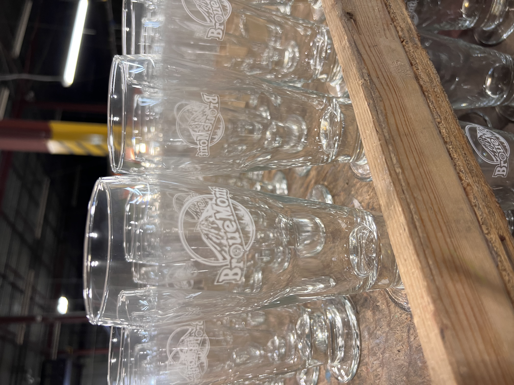
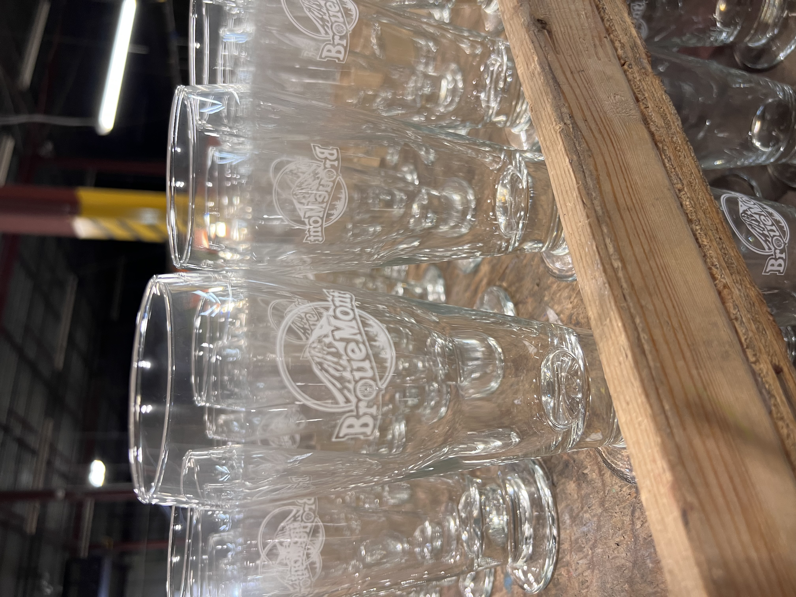
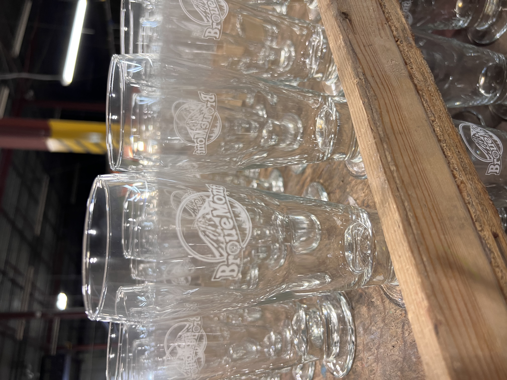

Welcome to my web portfolio! Here, you'll discover a comprehensive showcase of my professional work experience, educational background, skills, and other pertinent information. Each dropdown section provides detailed insights into every aspect.
